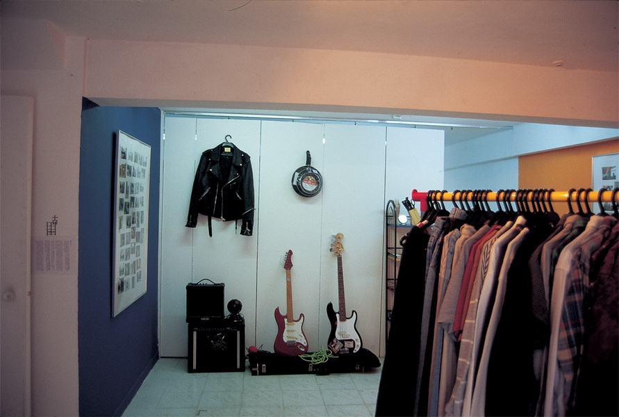
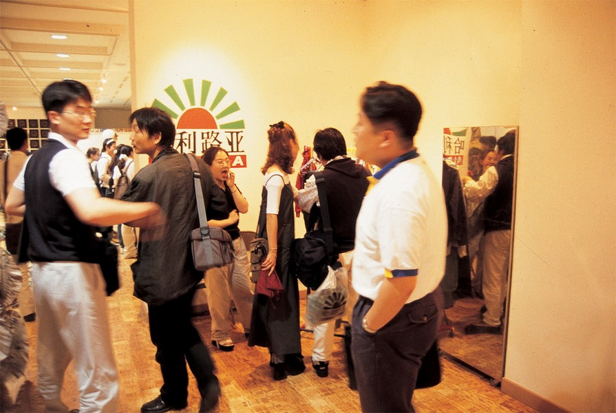

二手店 Second Hand Store
装置 Installation
这是在香港must做的一个项目。在这个项目里艺术家以艺术的名义变卖着被他称之为包袱的东西及书籍。
Second Hand Store is a project organized for ‘Must” in Hong Kong. For the project, the artist sold his books and objects that were considered a burden to him, all in the name of art.

